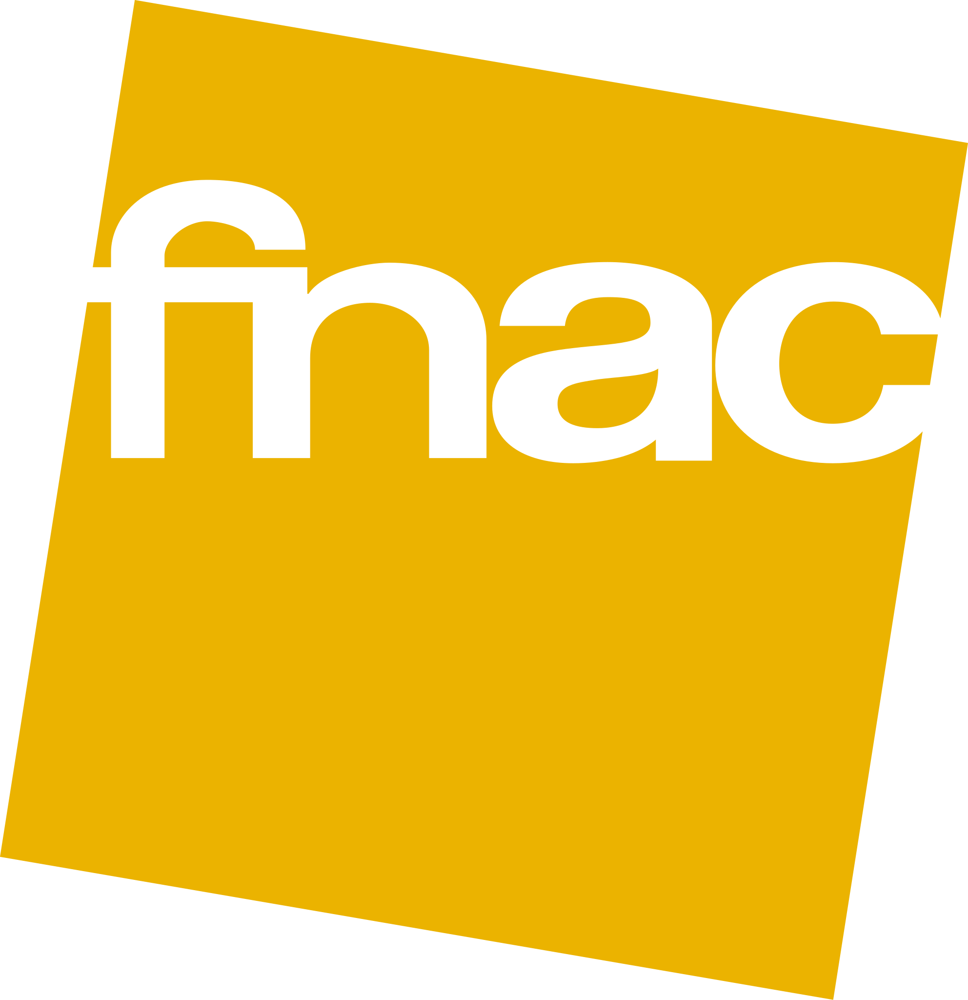
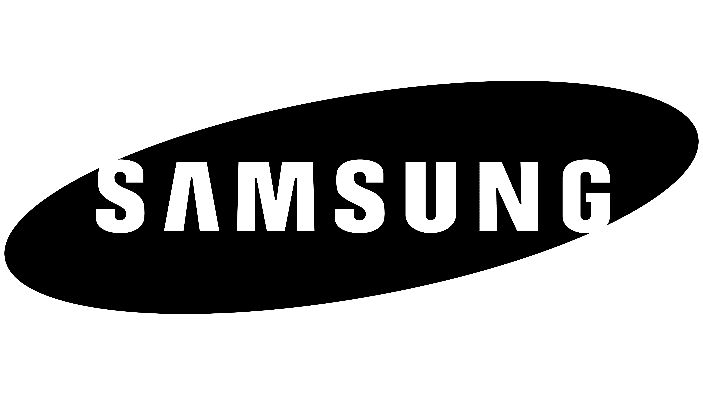

Multiverse Quest est un espace de divertissement immersif qui vous propose un ensemble
de jeux et d’activités variées comme le Casino, Laser Game, l’Escape Game et bien d’autres
encore. Toutes nos activités sont regroupées en un seul lieu pour vous permettre une meilleure
expérience de jeu. Chaque espace de jeu vous garantira un moment inoubliable par les décors et
les jeux plus vrais que nature.
Notre concept
Notre entreprise familiale, même si très récente, permet aux joueurs ou joueuses de
s’évader de leurs vies quotidiennes. Grâce aux systèmes d’immersion inclus dans chacune de nos
salles. Celle-ci peuvent contenir à la fois de la réalité virtuelle, du jeu d’acteur, et l’équivalent de la
4DX mais sans l’écran de cinéma! Notre devoir? Vous faire sortir de nos locaux avec le sourire aux
lèvres.
Découvrir
Multiverse Quest vous plonge dans plus de 1 hectare d’épreuves, d’amusement et de défis
en tout genre.
Découvrez les Multiverses qui s’offrent à vous et soyez transporté dans une épopée immersive qui
vous fera passer par plusieurs émotions.
Que vous soyez novice ou bien expert dans la matière, le Multiverse Quest réinvente les règles de
toutes les activités déjà connues. La présence d’acteurs, de technologie, de drone et de décors
réalistes vous transporteront dans des mondes plus vrais que la réalité même. Les activités et
accessibilité du Multiverse Quest restent accessibles à tous par la conformation (et ou disposition)
des salles, et permettent même aux personnes à mobilités réduite de profiter un maximum dans
chacune d’elles.
Que vous soyez seul, ou en équipe, vous devrez collaborer, communiquer et penser de la manière
la plus créative pour résoudre les défis et les mystères qui vous attendent. Votre but est de vous
frayer un chemin à travers les multiverses.
Préparez-vous à repousser vos limites, et vivre avec nous des moments intenses et inoubliables!
Soyez les premiers à réserver!
préparez-vous à affronter les épreuves du Multiverse Quest
Accessibilité et innovation
Le Multiverse Quest est ouvert à tous et à toutes! Se trouvant à 48 minutes de Paris, nous
restons accessibles par RER A et par voiture. Pour toutes personnes se déplaçant en voiture, il y
aura la possibilité de pouvoir garer votre voiture dans notre exceptionnel parking à thème, mais
attention aux dangers, votre voiture sera envoyée dans une nouvelle dimension !
Les Multiverses sont adaptés à chacun et sont accessibles pour les personnes à mobilité
réduite et/ou en fauteuil roulant, c’est pour cela que nos locaux sont agréés AFNOR.
Nous mettons un point d’honneur pour que chacun de vous passe un bon moment.
Découvre nos activités en vidéo
Ils nous ont fait confiance


Pourquoi, vous, sponsors, devez-vous nous rejoindre ? Nous sommes une jeune entreprise tournée vers le respect du visiteur et vers l'expansion à l'international. Notre but ? Agrandir notre entreprise pour que le plus grand nombre de personnes en profite ! Pour chaque sponsor obtenu, cher sponsor, vous aurez des avantages uniques dans notre humble demeure, en plus de vos produits vendus aux visiteurs.